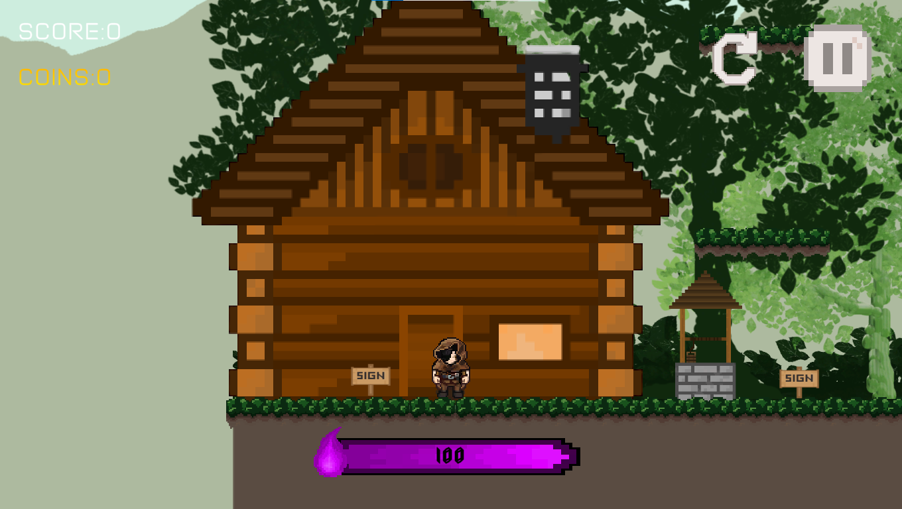

Lukso
Lukso means to jump or to leap. A 2D platformer RPG. My first game ever.
Project Description
The Artsy-Feely Adventures of Emy. is a charming and imaginative children's novel that mixes imagination, emotion, and life lessons. The story progresses as a succession of interactive sequences, with young readers assisting Emy in navigating hurdles presented by characters representing various emotions. The novel is enthralled not just by its wonderful environment, but also by fundamental themes of understanding, empathy, and the value of real friendships.
Project Details
This is a 2D RPG platformer game and my first-ever game. I incorporated elements of my own life into the game's story. During that time, I was searching for freelance work. When the pandemic hit, I had nothing to do since I had stopped going to school. So, I decided to watch online tutorials on game development. YouTubers like Brackeys and Danny inspired me to start making games—that's how Lukso was created.
Image Gallery

Rei beside his house.
Comes with different levels (endless mode).
 With lots of different characters.
With lots of different characters.